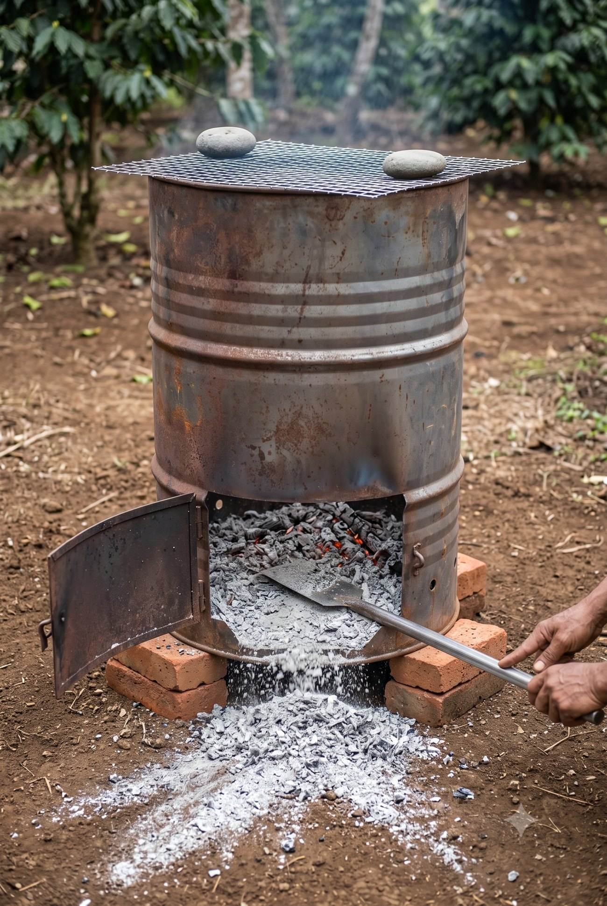

🔥
Manajemen Residu Kebun — Acuan Cepat
Apa dibuang ke mana · tong bakar · area bakar · aturan abu · 1 Agustus 2026
Pisahkan berdasarkan tiga hal: ukuran · sehat atau sakit · cara ia berkembang biak.
Yang menular dan yang tumbuh kembali dari potongan → dibakar di tong. Sisanya → mulsa. Bukan "semua dibakar", bukan "semua dikompos".
👁 Tong bakar & area bakar
Ukuran lengkap, delapan aliran residu, dan aturan api ada di bawah gambar.
 1
2
3
4
1
2
3
4
R1Gambar teknik tong bakar — berukuran✓ angka diperiksa⚠ jumlah lubang di gambar tidak persis
- Ambang bawah 3 cm (seruas jari) — inilah angka yang paling sering salah dipotong. Jangan lebih rendah: itu bibir gulung yang menjaga drum tetap bulat
- Pintu 40 × 25 cm — lebih LEBAR daripada tinggi, dan puncaknya berhenti di bawah rusuk gelang
- Dua baris lubang udara — barisan bawah dekat dasar, barisan atas di tengah badan. Jumlah lubang di gambar ini tidak persis; yang mengikat adalah tabel di atas: 8 lubang Ø 8 mm di 8 cm & 6 lubang Ø 5 mm di 40 cm
- Sisipan tampak atas — memperlihatkan lubang mengelilingi drum, bukan cuma di satu sisi
 1
2
3
4
5
1
2
3
4
5
R2Urutan merakit tong bakar✓ angka diperiksa
- Tutup bundar DIBUANG — melayang ke samping karena tidak dipasang. Tapi jangan dibuang beneran: dipakai lagi di tahap biochar
- Bukaan pintu rata lantai drum — perhatikan lantai dalam terlihat menerus sampai ambang. Inilah yang membuat abu bisa ditarik keluar tanpa terhalang
- Sisa baja di bawah bukaan cuma 3 cm (seruas jari) — jangan dipotong lebih rendah lagi, itu bibir gulung yang menjaga drum tetap bulat
- 2 engsel di kiri + kait kawat di kanan, plus 2 lubang Ø 8 mm (sebesar pensil) di daun pintu
- Alat yang dibutuhkan — gerinda potong, bor, tang, sarung tangan

1 2 3 4 5R3Tong bakar setelah dipakai⚠ bibir di gambar ± 6 cm, patokan 3 cm
- Bibir baja tipis — inilah kuncinya. Karena rendah, abu mengalir keluar sendiri melewatinya, tidak perlu dikorek. Patokan potong: 3 cm (seruas jari) dari dasar — makin tipis makin lancar
- Abu & bara sisa pembakaran — tidak ada yang tertinggal menumpuk terbendung di belakang bibir
- Ditarik keluar pakai serok bergagang panjang, gagangnya rata sepanjang jalur — drum tidak digulingkan
- Kawat kasa ditindih dua batu — penahan percik, wajib saat kemarau
- Daun pintu terbuka ke kiri pada dua engsel; kait kawat di sisi kanan
 1
2
3
4
5
6
1
2
3
4
5
6
R4Area bakar tetap — tampak atas
- Drum di titik tetap — satu titik per kebun, disiapkan sekali, dipakai seterusnya
- Cincin tanah mineral 2 m (tiga langkah) — dikupas bersih. Pakai kerukan abu vulkanik untuk alasnya
- Radius bersih 5 m (tujuh langkah) — tanpa rumput kering, tanpa tumpukan bahan
- Kopi terdekat di luar lingkaran 5 m — panas radiasi menghanguskan daun; ini sudah pernah terjadi di K4
- Batas tetangga ≥ 10 m (empat belas langkah) — kalau tak memungkinkan, ambil titik terjauh dan beri tahu tetangga lebih dulu
- Air + sekop sudah di lokasi — sebelum api dinyalakan, bukan diambil setelah ada masalah
🖼️ Semua gambar di halaman ini dibuat dengan bantuan AI sebagai alat bantu memahami — bukan foto kebun kita, jangan dipakai sebagai bukti kondisi lapangan. Yang sah adalah bulatan bernomor dan daftar di bawah tiap gambar — itu tulisan kita. Kalau angka di gambar berbeda dengan tabel di halaman ini, tabel yang benar.
1 Delapan aliran — tabel gantung di gudang
Aliran 1
Wiwilan & daun hijau
MULSA langsung di piringan, atau masuk alur
Aliran 2 · < 2 cm
Ranting kecil kering
CACAH chopper → mulsa antar-baris
seruas jari
seruas jari
Aliran 3 · 2–5 cm
Cabang sedang
CACAH bila sanggup, kalau tidak BAKAR
lingkaran jempol-telunjuk
lingkaran jempol-telunjuk
Aliran 4 · > 5 cm
Kayu besar & bonggol
BAKAR di tong · kelak jadi biochar
Aliran 5
Bahan SAKIT
MUSNAHKAN jamur · dieback · tali merah · bergerek. Jangan dikompos, jangan ditumpuk
Aliran 6
Gulma menjalar
JEMUR 3–5 HARI → BAKAR sembung rambat · lulangan · grinting. Jangan dicacah
Aliran 7
Daun pisang kering
BAKAR bersama aliran 3–4
Aliran 8
Gedebog pisang
CACAH → KOMPOS di piringan. Bonggol & tunas tetap dibongkar tuntas → aliran 6
⛔ Kenapa gulma di kebun ini TIDAK boleh jadi mulsa. Ketiga jenis yang dominan berkembang biak dari potongan — sembung rambat berakar di tiap buku batang, lulangan/torpedo tumbuh kembali dari satu buku rimpang (bahkan dari kedalaman satu hasta), grinting punya geragih dan rimpang sekaligus. Mencacah bukan membunuh — mencacah adalah menanam. Kompos kebun juga tidak cukup panas untuk membunuh rimpangnya, dan herbisida NOXONE (parakuat) hanya membakar daunnya, tidak rimpangnya.
2 Tong bakar — alat tahap 1
Ukuran tong bakar — bawa daftar ini ke tukang
| Bagian | Ukuran | Catatan |
|---|---|---|
| Drum | Bekas 200 liter, baja Ø 57–60 cm × tinggi 88–90 cm tiga jengkal · setinggi pinggang | Tebal dinding minimal 1,2 mm. Umur 5–10 kali bakar |
| Tutup atas | Dipotong habis | Simpan tutupnya — dipakai lagi di tahap biochar |
| Pintu bawah | 40 × 25 cm ambang bawah 3 cm dari dasar seruas jari | Rata dengan lantai dalam drum supaya abu ditarik langsung tanpa terhalang bibir. Jangan lebih rendah — 3 cm itu tepat di atas bibir gulung yang menjaga drum tetap bulat |
| Puncak pintu | 28 cm dari dasar | Berhenti di bawah rusuk gelang yang ada di 30 cm. Rusuk itu JANGAN dipotong |
| Engsel & kait | 2 engsel kiri · 1 kait kawat kanan | Kait sederhana sudah cukup |
| Lubang di daun pintu | 2 lubang Ø 8 mm sebesar pensil | Di garis 8 cm — melengkapi 6 lubang di dinding jadi 8 |
| Dasar drum | Dibiarkan utuh | Abu tertampung. Bor 4–6 lubang Ø 8 mm bila drum kehujanan |
| Alas | 3 batu bata, drum terangkat ± 10 cm sekepalan | Udara masuk dari bawah · tanah tidak terpanggang |
| Penahan percik | Kawat kasa ± 60 × 60 cm, lubang ± 5 mm | WAJIB musim kemarau. Ditindih dua batu |
📐 Ukuran vs wujud. Gambar R1 (gambar teknik) yang mengunci ukuran — itu yang dibawa ke tukang. Gambar R3 memperlihatkan wujudnya saat sudah dipakai. Kalau keduanya berbeda, R1 dan tabel di atas yang benar. Keduanya ada di galeri paling atas halaman ini.
Cara pakai — tujuh langkah
1Pastikan keringBahan basah = asap pekat, tetangga terganggu
2Isi maks ¾Susun longgar. Yang padat justru sulit menyala
3Nyalakan dari pintuSedikit daun kering. Tutup pintu saat api stabil
4Pasang kawat kasaTindih dua batu
5Tunggui 40–90 menitJangan ditinggal sampai api mati
6Abu dikeruk BESOKBuka pintu, tarik abu langsung keluar dengan serok. Yang tampak dingin bisa masih membara di dalam
7Catat ke dashboardTanggal · kebun · aliran · jumlah karung
3 Area bakar tetap — satu titik per kebun
Lahan datar justru menguntungkan. Bara tidak menggelinding, api tidak punya arah rambat menanjak, alas rata lebih mudah disiapkan. Yang tetap dijaga hanya angin dan jarak — bukan kemiringan. Aturan lama "letakkan di bagian bawah lereng" sudah dibatalkan.
| Syarat | Ukuran |
|---|---|
| Radius bersih dari bahan kering | ≥ 5 m tujuh langkah |
| Cincin tanah mineral | 2 m tiga langkah |
| Jarak ke kopi produktif | ≥ 5 m tujuh langkah |
| Jarak ke batas tetangga | ≥ 10 m empat belas langkah |
| Air / tanah urug siap di lokasi | 1 ember + 1 sekop, sebelum api menyala |
| Waktu | Sore. Batalkan bila angin kencang |
Area bakar ini kelak jadi stasiun biochar — alas, cincin, dan jarak amannya sama persis. Menyiapkannya sekarang berarti tahap 2 tinggal menaruh drum.
4 Ukuran praktis — tanpa meteran
Kalibrasi sekali saja: ukur jengkal, hasta, dan langkah Anda dengan meteran, catat di HP. Setelah itu meteran boleh ditinggal di rumah.
1 cm
setebal jari kelingking
2–3 cm
satu ruas jari telunjuk
5 cm
dua ruas · lingkaran jempol-telunjuk
8 cm
empat jari dirapatkan
10 cm
selebar kepalan tangan
20 cm
satu JENGKAL
25 cm
satu panjang sepatu
40 cm
dua jengkal · mata cangkul penuh
50 cm
satu HASTA · setinggi lutut
90 cm
setinggi pinggang · gagang cangkul
1 m
satu langkah lebar
5 m
tujuh langkah biasa
Ember biasa
10 L
≈ 5 kg kompos = jatah satu pohon
Ember cat bekas
20 L
≈ 10 kg kompos = dua pohon
Karung pupuk
60 L
cukup untuk ± 10 pohon
Drum 200 L sekali isi
4 karung
ranting kering
Aturan emas: satu ember, satu pohon. Tidak perlu menimbang apa pun.
5 Abu — jangan ditabur tebal
Kenapa dibatasi
pH kebun sudah 6,2 = ideal. Uji tanah menulis "tidak diperlukan pengapuran". Abu bersifat mengapur → di sini itu risiko, bukan manfaat
Kalau masuk kebun
maks 0,25 kg
per pohon per tahun ± segenggam penuh, ditabur tipis di pita tepi tajuk — bukan di leher batang
Tujuan utamanya
Alas area bakar
& jalan setapak
& jalan setapak
Di situ sifat basanya tidak merugikan siapa pun
Jangan campur abu dengan Urea atau ZA — beri jeda 2–4 minggu. Abu bersifat basa; nitrogen pupuk yang bertemu suasana basa menguap jadi gas amonia dan hilang. Kaliumnya lebih baik diambil dari KCl dan kompos kambing, yang tidak mendorong pH naik.
6 Jalan naik ke biochar — tahap 2
| Tong bakar tahap 1 — sekarang | Drum biochar tahap 2 — nanti | |
|---|---|---|
| Udara | Bebas masuk | Dibatasi lubang tertentu saja |
| Arah nyala | Dari bawah ke atas | Dari atas ke bawah (top-down) |
| Lama tunggu | 40–90 menit, selesai hari itu | 2–4 jam + dingin tertutup 12–24 jam |
| Hasil | Abu, 2–6% berat bahan | Arang, 25–50% berat bahan |
| Siap pakai? | Langsung tabur tipis | Harus di-charge dulu |
Tiga tambahan pada drum yang sama — tidak beli baru: ① 8 lubang Ø 8 mm (sebesar pensil) melingkar di 8 cm (empat jari) dari dasar ② 6 lubang Ø 5 mm (sebesar tusuk sate) di 40 cm (dua jengkal) ③ tutup pelat seng 60 × 60 cm dengan 4 lubang Ø 3 mm (sebesar lidi). Ditambah satu perubahan cara: pintu bawah disumbat tanah liat — pintu bocor membuat arang habis jadi abu.
⚠️ Pelaksana. Per 1 Agustus 2026 kebun tanpa pekerja lapangan tetap — hanya Wakif dan Lek Nardi, ditambah crew panen pada musimnya. Kerjakan Tier 1 dulu: gulma aliran 6 (bertambah tiap minggu ditunda) dan bahan sakit aliran 5 (menular).
Kajian lain yang berhubungan langsung
🪓 Sanitasi Tunggaktunggak lapuk = sumber jamur akar; kayunya masuk aliran residu
🔥 Biochar & Drum Kilntahap 2 dari tong bakar yang sama
🌱 Pupuk & Kerak Abuke mana mulsa & arangnya ditaruh
Acuan cepat · Manajemen Residu Kebun · Wakaf Produktif Kebun Kopi Ngantang · 1 Agustus 2026.
Halaman ini sengaja ringkas untuk dipakai di lapangan. Alasan, bukti, hitungan, dan seluruh rujukan ilmiah ada di versi lengkap — buka lewat tombol ↗ Buka penuh. Status BRIN: penjajakan, belum ada MoU maupun PKS.
Halaman ini sengaja ringkas untuk dipakai di lapangan. Alasan, bukti, hitungan, dan seluruh rujukan ilmiah ada di versi lengkap — buka lewat tombol ↗ Buka penuh. Status BRIN: penjajakan, belum ada MoU maupun PKS.